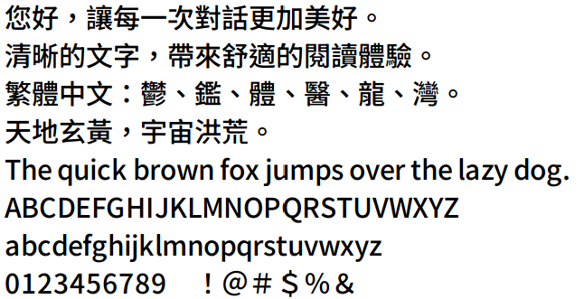

一鍵美化
使用 LINE 所附 Qt 的 FreeType 字體引擎。
不換螢幕，不換字型，讓每一次對話更加美好。免費改善 LINE 電腦版的文字渲染品質。
免費下載 RC5 ↗查看實測比較Windows 10 / 11 x64 · 2.87 MB · 公開測試版，未簽章
使用 LINE 所附 Qt 的 FreeType 字體引擎。
單一 EXE，無需另外下載 Qt。
可選擇管理自動啟動，並還原原廠設定。
五組 LINE 真實截圖，Windows 11、200% 顯示縮放。只裁切文字，沒有人工銳化。點擊任一圖片可查看原始像素；效果因環境而異。



工具只對 LINE 啟動程序指定 Qt 參數，不修改 LINE EXE 或 DLL，也不修改全域字體設定。套用時會建立本機啟動器及捷徑，並依選項管理目前使用者的自啟項目。
QT_QPA_PLATFORM=windows:fontengine=freetype目前 EXE 尚未取得數位簽章。請勿關閉防毒軟體；可以檢視原始碼或核對以下 SHA-256。
dc17ea216d858b2a22f1e1e085922c3a007fbc3213ee73c835d90b5353b6d50c目前主要在 Windows 11、200% DPI 測試；其他環境及 LINE 版本尚待驗證。工具不保證改善所有字體。
目前程式介面為繁體中文，網站提供中英文說明。歡迎提出語言需求。